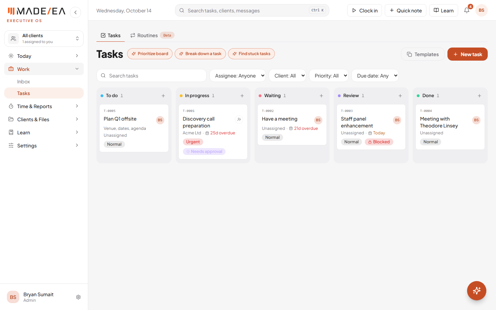
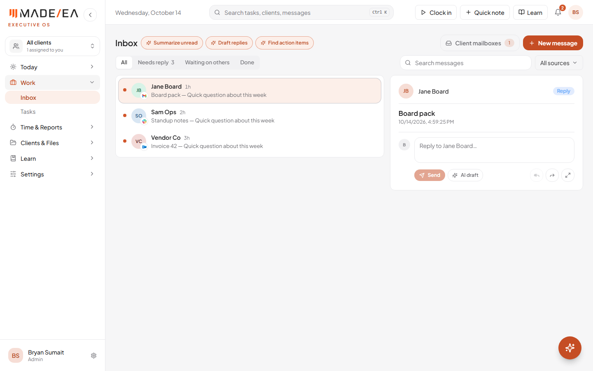
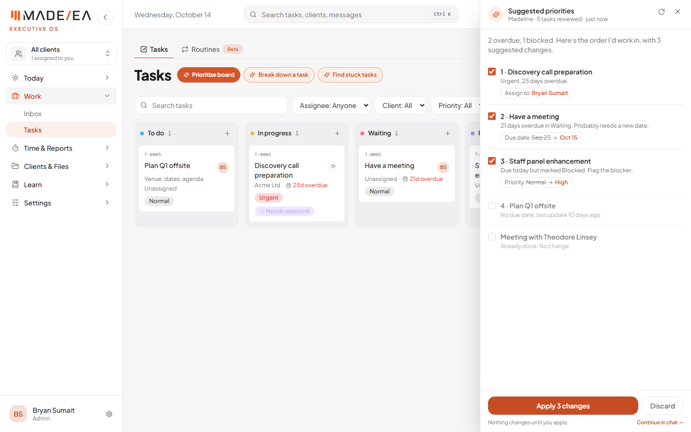
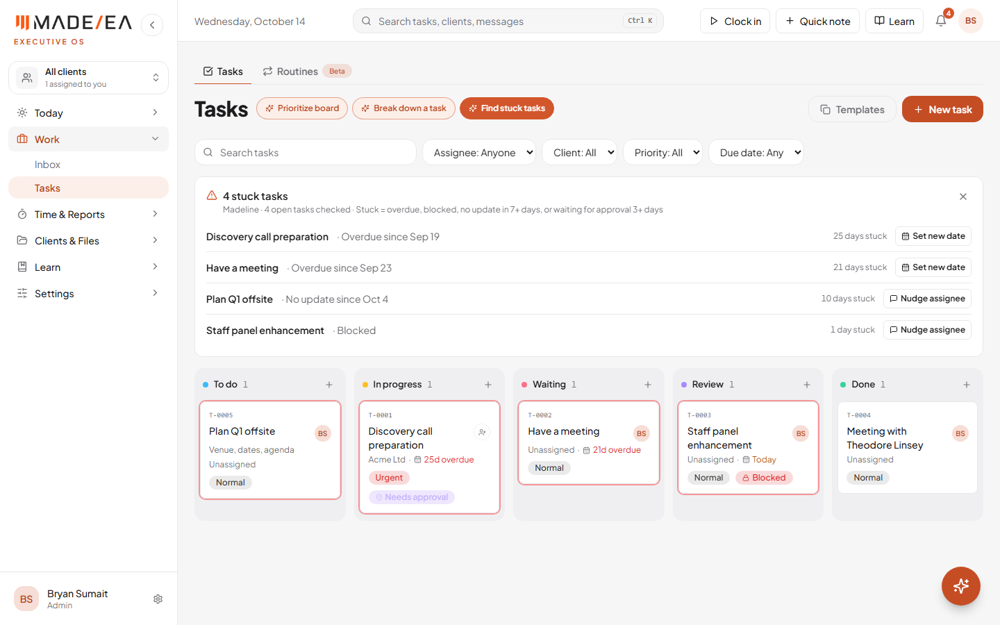
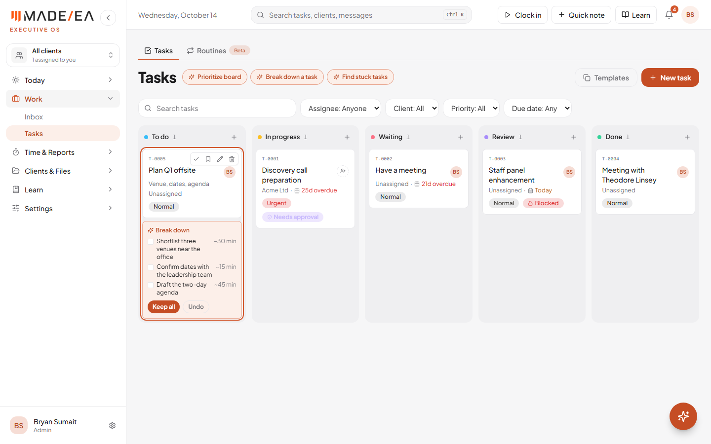
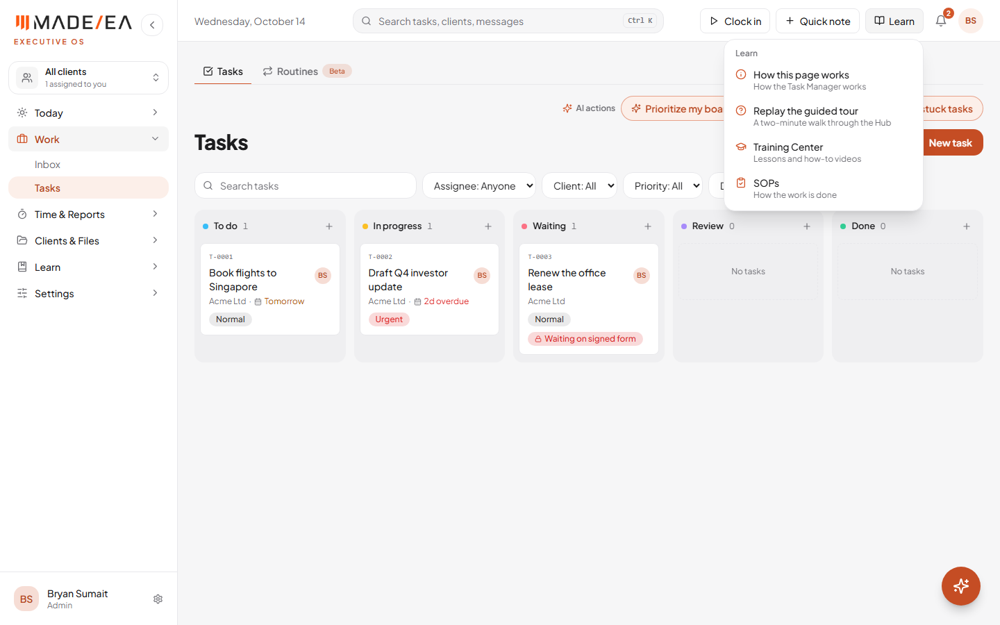
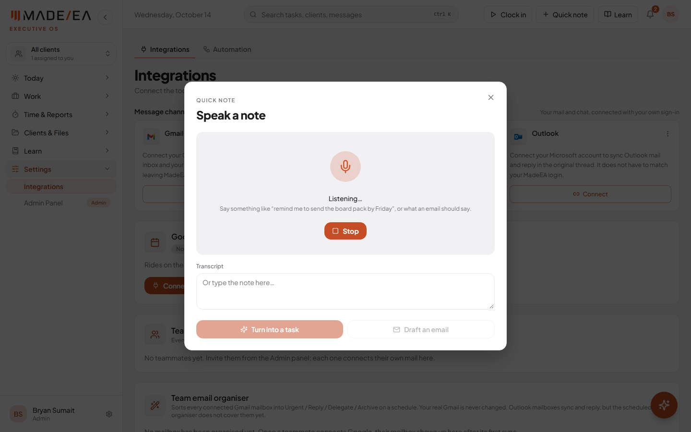
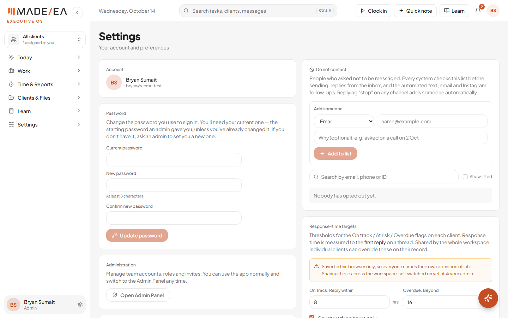

The first AI quick actions now sit on the pages themselves, on Tasks and in the Inbox, as Abder asked, and the three on Tasks are built to his answer spec. The other changes agreed on the call are also done: channel logos in the Inbox, a visible Learn menu, a "Draft an email" quick note, and a cleaner layout without the footer. All of it is live at hub.madeeas.com.
As agreed, the AI actions now sit on the page, labelled in words, and the answer opens in a pop-up over the page. Nobody has to open the chat. They pulse gently until someone has tried one, so they get noticed rather than ignored.
| Page | Actions | Where |
|---|---|---|
| Tasks | Prioritize board · Break down a task · Find stuck tasks | Beside the title (see 1b) |
| Inbox | Summarize unread · Draft replies · Find action items | Beside the title, as in Abder's mockup |
Nothing is sent or saved without a click: drafts are there to review, and changes wait for you to apply them.


Abder's spec sets out exactly what each Tasks action reads, how it answers and what it does when there's nothing to report. All three now work that way. The answers are plain and factual, built only from the board, and nothing changes until you apply it.
| Action | What it does now |
|---|---|
| Prioritize board | A side panel slides in from the right and leaves the board visible. It shows how many tasks were reviewed, then one line such as "2 overdue, 1 blocked. Here's the order I'd work in, with 3 suggested changes." Below that, up to 10 tasks are ranked (overdue first, then due today, then blocked or waiting on approval), each with a one-fact reason. Up to 5 get one suggested change each, such as "Assign to …", "Due date Sep 23 → Oct 15" or "Priority Normal → High", ticked by default. Apply N changes saves only what is ticked, and an Undo stays on screen for 10 seconds. It never marks a task Done, deletes or renames one, only moves due dates forward for overdue tasks, and only assigns to the client's own EA. |
| Break down a task | Pick a card, then press the button. With no card picked it says "Pick a task first". It writes 3 to 7 short steps, each starting with a verb, in working order, with a time estimate where it can judge one. The steps appear on the card itself with Keep all / Undo. If the task is too vague, it asks one short question instead of guessing. |
| Find stuck tasks | A card above the board, with the stuck cards outlined on the board. Stuck means overdue, blocked, no update in 7+ days, or waiting for approval 3+ days. Each row shows the task, why it's stuck, the days stuck and one action: Set new date, Nudge assignee (a comment on the task) or Open. It shows 5 rows, then "Show N more". When all is well: "Nothing is stuck. Every open task moved in the last 7 days." |



On the call, asking in the chat opened the answer in a pop-up. Now, anything asked or clicked inside the Madeline chat is answered in the chat. The pop-up is only for the AI action buttons on the pages.
Every message now carries its channel's logo (Gmail, Slack, Outlook and so on) on the corner of the sender's circle. Messages from every channel can sit in one list, and you can still see at a glance where each came from. You can see this in the Inbox screenshot above.
A new Learn button in the header holds "How this page works", "Replay the guided tour", the Training Center and the SOPs. Before, the guide and the tour were tucked inside the account menu. The sidebar's "Guides & Training" is now called Learn, and training videos will go in the Training Center as they are made.

A spoken or typed quick note can now become an email as well as a task. Draft an email sits beside "Turn into a task". Madeline works out who it's for, writes a subject line and the email, and shows the draft for you to review. Nothing is sent.


| Update | What went live |
|---|---|
| c6f3e45 | Changes from the 13 October call: Tasks AI actions, chat answers in the chat, Inbox logos, Learn, Draft an email, footer, layout, Stop sharing |
| af1522e | Inbox AI actions beside the title |
| 421fdfd | Tasks AI actions built to Abder's answer spec (side panel, stuck tasks, break down in place) |
| AI service | Updated for "Break down a task", deployed |